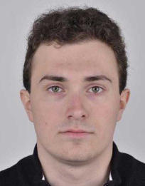
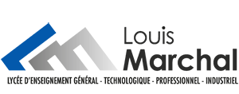

Who I am ?
I am ROHFRITSCH Kilian, I’m 18 years old and I’m doing a bachelor’s in networks and
telecommunication. I chose to do my studies in the network, because I have always been
interested by these technologies and I would like to work in this area.
My school cursus
I was in a German bilingual class until the “Troisième”, saw I have now a B1 level in
German. I studied in high school "Louis Marchal", my 2 specialties were : engineering
Sciences and digital science and computer science. I chose these 2 matters because I
really love them and they were in my centre of interest.

What I want to do after my bachelor ?
Today I didn’t really know what I’m going to do after my bachelor… For the moment I’m
waiting the second year because I really want to work in alternately. This will show me
the real life outside of studies and I think that’s it could be chose if I want to continue
my studies after my bachelor or if I go to work.